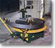
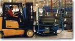

| OUR CUSTOMERS |
"When I presented my challenges
to Accra-Wire Controls, it was apparent that the technology
used in tension control and coil handling could really help
us. We are now able to load a shift's production at one time,
eliminating up to nine coil changes." - Monty
BrennerPlant Manager
Pullman Industries
Michigan, USA |
|
|
"Deciding
When to Use Pallet Decoilers"by
John Heuring
|
| |
| What's the main difference
between a microwave and a conventional oven? They both cook food,
right? So why did the invention of the microwave oven revolutionize
the way people cook? In a word, it was
efficiency. People are constantly striving to find better ways to
do things. They want everything to be bigger, stronger, faster,
and more efficient. The pursuit of efficiency led inventive men
and women to create the elevator, television, facsimile machine,
1.0-liter gasoline engine, and the Internet .
New
generation continues quest for efficiency The metalworking industries
are no stranger to the pursuit of efficiency. Gone are the day of
easy profits and "cooperative competition." Today's "dog-eat-dog"
approach to business is readily apparent. With fierce competition,
the need for increased production efficiency is greater then ever.
Can pallet decoiling help in this quest for increased
manufacturing efficiency? What does this new coil handling technology
promise regarding efficiency in metal stamping and forming plants?
When can pallet decoilers be used successfully? What are there limitations?
This article will address these questions.
|
| |
What is a pallet
decoiler?
A pallet decoiler is a coil handling machine that enables
the user to run coil stock on its side, or "eye to the sky."
This style of decoiler allows the entire pallet of coils to be loaded
at once without the usual "up ending" and physical coil
handling associated with traditional decoiling methods such as mandrel
reels and coil cradles
Pallet
decoilers generally use some type of control point, ranging from
front and side dancer arms to control slide drums, to actuate the
drive system. In some instances, free-standing sensors are used.
Older versions of pallet decoilers were generally "on/of"
styles that reacted to a microswitch on a dancer arm. Modern designs
use some version of a variable-speed DC drive. |
| |
Advantages and misconceptions
Pallet decoiling can help reduce press downtime associated with coil
changes, because it enables the user to place an entire skid of coil
stock on the platform at once. With less downtime, production rates
can be enhanced. Quicker changeovers also ensure that dies stay warmer,
reducing scrap and tool wear.
Pallet decoilers also offer what is generally considered to be
a safe method of decoiling flat stock. Unlike traditional crane
and "C" hook loading, no manual coil handling is required
while loading a pallet decoiler. Back pain and abrasions are unlikely
when coil loading is done from a forklift.
Misconceptions about pallet decoilers are common in metal-working
plants. Many believe that these types of uncoilers can be used only
for very narrow and/or thin material. Others believe that they are
capable of operating effectively only at slow speed or light loads.
The new generation of pallet decoilers, however, is more versatile
then are the older styles. Decoilers now on the market can handle
material width up to 30 inches, although generally in thickness
under 0.050 inch. Some decoilers can run stock as thick as 0.187
inch.
 Some
can handle speeds up to 400 feet per minute and quick-start roll
forming lines. Still others designs can accommodate loads in excess
of 25,000 pounds. Some
can handle speeds up to 400 feet per minute and quick-start roll
forming lines. Still others designs can accommodate loads in excess
of 25,000 pounds. |
| |
Applications:
Stamping presses are the most popular production machines used with
pallet decoilers. Most high-volume stampers go through hundreds of
coils of flat stock per month. Instead of stopping production for
up to 20 minutes for each coil change, they can now get their presses
back up in as little as two minutes. With traditional coil handling
methods, a coil usually picked up off a coil stack either by a crane
or a "C" hook. In some instances, a coil would be placed
on an automated up-ender to turn the coil inside diameter (ID) horizontal.
The coil would then be either be loaded onto a mandrel reel or be
dropped into a coil cradle. Usually, changeover times for these
procedures range from 5 to 20 minutes.
Other applications in which pallet decoilers may be useful include
four-slide and cut-to-length operations, which have similar downtime
and labor demands.
New technology such as specialized controllers and high-torque
drive systems that some "high-end" pallet decoilers employ
have increased their capabilities in demanding environments. For
example, most consider that high-speed, clutch-driven roll formers
with their immediate acceleration are too demanding for pallet decoilers.
However, some pallet decoilers equipped with the new controls and
systems can be used in such capacities.
An additional benefit for those running high-speed presses or mills
is that some pallet decoilers can handle coils with outside diameters
(ODs) as large as 80 inches, while many mandrels and cradles are
limited to the typical 48- or 60- inch OD coils. The larger coils
allow longer production runs between changeovers.
In some instances, the reduction in coil changeovers allows one
operator to run several lines at once. One automotive supplier in
Michigan, for example, uses pallet decoiling with all 12 of its
roll forming lines in a new facility that has no mandrel reels,
cradles, cranes, or up-enders. The company also increased coil ODs,
began placing the coils at the lines rather than in a central storage
area, and purchased new mill controls. Now, each operator runs two
mills simultaneously, and production rates have jumped 400 percent.
Progress is also being made in paying off heavy-gauge stock from
a pallet decoiler. This has always been the biggest drawback for
decoilers, because thick strip tend to have a great deal of "clock
spring." And it is difficult to turn flat. Some pallet decoilers
now include features such as plane turners and coil containment
systems to combat the problem.
|
| |
Limitations
Despite their advancements, pallet decoilers still have some inherent
limitations. One of the most confining is stock size, because running
stock wider than 30 inches or thicker than 0.250 inch is currently
not possible on a pallet decoiler. Another potential drawback is
space limitations. Some newer pallet decoilers no longer require
a loop of material to properly decoil the stock. On lower-end models,
however, a loop of material is still necessary for proper decoiling,
possibly requiring more room than do reels or cradles.
Finally, applications in which the user is constantly banding and
unbanding the coils for short production runs are not well suited
for pallet decoilers. When various strip widths gauges are run alternately,
double mandrel reels often provide quicker coil changeovers than
pallet decoilers. |
| |
Machine Features
It is a good idea to investigate several machine features before purchasing
a pallet decoiler. First, does the machine control material tension?
Maintaining the material tension throughout the decoiling process
reduces the chances of the kinking and "pitting" that often
occurred with earlier pallet decoiler designs. The decoiler should
have properly rated acceleration and decel-eration times. This is
the time needed for the platform to accelerate to full speed from
a dead stop and to stop completely from full speed. If the decoiler
does not have a quick ramp-up build into its controls, the system
will fail to keep up with quick-start presses and mills. Conversely,
if the decelerating time is inadequate, the decoiler will not stop
quickly enough, and the coil stock will likely over-travel, creating
other problems.
Acceleration/deceleration time is closely linked to another important
consideration, power. Every pallet decoiler application, regardless of the style of drive
or decoiling method, is governed by the laws of inertia.
Every pallet decoiler application, regardless of the style of drive
or decoiling method, is governed by the laws of inertia.
Overcoming the great amounts of inertia generated from heavy-load,
high-speed, large coil OD applications requires a tremendous amount
of horsepower. Some companies have developed computerized inertia
formulas to calculate the horsepower requirements based on the specifications
of the application. The horsepower required is inversely proportional
to the acceleration/deceleration requirements. To illustrate, consider
an application that calls for a 1-HP motor with a four-second acceleration/deceleration
time. If the acceleration/deceleration time were increased 100 percent
to eight seconds, the horsepower requirements would be reduced by
50 percent to ½ HP. Conversely, if the acceleration/deceleration
time were cut in half to 2 seconds, the horsepower requirements
would double to 2 HP.
A final consideration before buying is the type of drive with which
the decoiler is equipped. Generally, electric (DC) and hyghdro-static
drives are considered to be the quickest reacting. Pneumatic systems
are rarely used because they are generally regarded too "jerky"
and inconsistent for pallet decoiling.
|
| |
| Conclusion |
| |
| The new pallet decoilers
have incorporated features and technology designed to help increase
manufacturing efficiency. No longer used only for very narrow or thin
materials, some of today's pallet decoilers can handle widths up to
30 inches, while others run thickness' up to 0.187 inch. Feed rates
of as much as 400 feed per minute are available. Pallet decoilers
may not be the best choice for short-production runs that require
frequent banding and unbanding of coils. For high-production applications,
however, pallet decoilers may provide an extra margin of efficiency.
|
| |
John Heuring is
a sales consultant with Accra-Wire Controls, Inc.
REPRINTED WITH PERMISSION FROM THE NOV/DEC 1996 STAMPING QUARTERLY
833 FEATHERSTONE RD, ROCKFORD IL 61107, 815/399-8700 |
| |
| Consult
AWC for the right choice for YOUR application. |
Back to top |